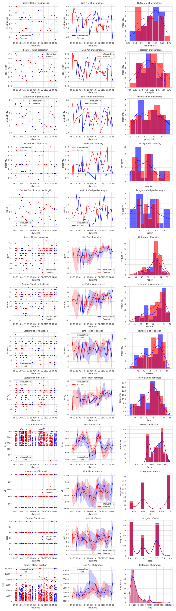

author: niplav, created: 2023-01-06, modified: 2025-09-17, language: english, status: maintenance, importance: 3, confidence: likely
Modeled after Gwern 2018 I've decided to log my nootropics usage and its effects. Includes three quantified self experiments, one on Caffeine, one on L-theanine, and one on Vitamin D₃.
You could put randomized substances in your body and find out what they do by recording the outcomes. That's what I did.
| Value tracked | Effect size d (200 mg Caffeine (n=11, m=502)) | Effect size d (500 mg L-theanine (n=1, m=50)) | Effect size d (25μg Vitamin D₃ (n=1, m=50)) |
|---|---|---|---|
| Log-score of prediction3 | -0.6 | -0.7 | -0.707 |
| Absorption | 0.61 | 0.04 | -0.14 |
| Mindfulness | 0.58 | 0.12 | 0.16 |
| Productivity | 0.58 | -0.28 | 0.01 |
| Creativity | 0.45 | -0.12 | -0.27 |
| Subjective duration | Not collected | -0.015 | -0.12 |
| Happiness | 0.27 | 0.16 | -0.11 |
| Contentment | 0.13 | 0.25 | 0.07 |
| Relaxation | -0.11 | 0.12 | -0.26 |
| Horniness4 | -0.14 | -0.03 | -0.16 |
| Flashcard ease | 0.003 | -0.072 | 0.001 |
| Flashcard ease factor | -0.039 | 0.0026 | -0.014 |
| Flashcard new interval | 0.011 | -0.016 | 0.069 |
| Time per flashcard5 | 0.006 | 0.003 | 0.054 |
Hue indicates effect size, opacity indicates likelihood ratio (less opacity indicates higher likelihood ratio). Full table with sample sizes, likelihood ratios, changes in variance &c in this appendix.
I am especially interested in testing many different substances for their effect on meditation, while avoiding negative side effects. The benefits from high meditational attainments seem valuable to me, and could be especially likely to benefit from chemical intervention, since the Algernon argument likely doesn't apply: Meditative attainments might've not led to a fitness advantage (even, by opportunity cost, to a fitness disadvantage), and so were likely selected against, but most of us don't care that much about inclusive genetic fitness and more about psychological well-being. Evolutionary dynamics favor being like Ghengis Khan (dozens to hundreds of offspring) over Siddharta Gautama (one son), but I'd rather attain sotāpanna than pillage and murder.
And meditative attainments are costly: they take tens to hundreds to thousands of hours to reach, which would make simple psychopharmacological interventions worthwhile. I also don't buy that they miss the point of meditation—most people already struggle enough, so some help doesn't make it a cakewalk; "reach heaven through fraud". One must be careful not to fall into the trap of taking substances that feel good but lessen sensory clarity (which I believe was the original intent behind the fifth precept, and so I'll exclude e.g. opiates from the substances to test).
I won't dig too deep into the effects of caffeine, as other people have done that already (Examine, Gwern, Wikipedia).
Variables tracked (see more here):
The total cost of the experiment is at least 21.5€:
200mg caffeine pills, placebo pills filled with sugar, of each 25.
Put each pill with a corresponding piece of paper ("C" for caffeine,
"P" for placebo) into an unlabeled envelope. Used seq 1 50 | shuf
to number the envelopes, and sorted them accordingly.
Notes on the experiment:
In general, I'll be working with the likelihood ratio test (encouraged by this article). For this, let be the distribution of values of a variable for the placebo arm, and the distribution of values for a variable of the caffeine arm. (I apologise for the being ambiguous, since it could also refer to the control arm).
Then let be the Gaussian maximum likelihood estimator for our placebo values, and be the MLE for our caffeine values.
Then the likelihood ratio statistic is defined as
where is the likelihood the caffeine distribution assigns to the parameters . This test is useful here because we fix all values of . See Wasserman 2003 ch. 10.6 for more.
If , then the MLE for the placebo arm is very close to the MLE for the caffeine arm, the distributions are similar. If , then the MLE for the placebo arm is quite different from the caffeine arm (though there is no statement about which has higher values). is not possible, since that would mean that the MLE of the placebo distribution has a higher likelihood for the caffeine data than the MLE of the caffeine distribution itself—not very likely.
Note that I'm not a statistician, this is my first serious statistical analysis, so please correct me if I'm making some important mistakes. Sorry.
After collecting the data, but before analysing it, I want to make some predictions about the outcome of the experiment, similar to another attempt here.
Moved here.
We start by setting everything up and loading the data.
import math
import numpy as np
import pandas as pd
import scipy.stats as scistat
substances=pd.read_csv('../..//data/substances.csv')
meditations=pd.read_csv('../../data/meditations.csv')
meditations['meditation_start']=pd.to_datetime(meditations['meditation_start'], unit='ms', utc=True)
meditations['meditation_end']=pd.to_datetime(meditations['meditation_end'], unit='ms', utc=True)
creativity=pd.read_csv('../../data/creativity.csv')
creativity['datetime']=pd.to_datetime(creativity['datetime'], utc=True)
productivity=pd.read_csv('../../data/productivity.csv')
productivity['datetime']=pd.to_datetime(productivity['datetime'], utc=True)
expa=substances.loc[substances['experiment']=='A'].copy()
expa['datetime']=pd.to_datetime(expa['datetime'], utc=True)
The mood data is a bit special, since it doesn't have timezone info, but that is easily remedied.
mood=pd.read_csv('../../data/mood.csv')
alarms=pd.to_datetime(pd.Series(mood['alarm']), format='mixed')
mood['alarm']=pd.DatetimeIndex(alarms.dt.tz_localize('CET', ambiguous='infer')).tz_convert(tz='UTC')
dates=pd.to_datetime(pd.Series(mood['date']), format='mixed')
mood['date']=pd.DatetimeIndex(dates.dt.tz_localize('CET', ambiguous='infer')).tz_convert(tz='UTC')
This data can now be plotted unwieldly:
We can first test how well my predictions fared:
probs=np.array(expa['prediction'])
substances=np.array(expa['substance'])
outcomes=np.array([0 if i=='sugar' else 1 for i in substances])
drumroll
>>> np.mean(list(map(lambda x: math.log(x[0]) if x[1]==1 else math.log(1-x[0]), zip(probs, outcomes))))
-0.5991670759554912
At least this time I was better than chance:
>>> np.mean(list(map(lambda x: math.log(x[0]) if x[1]==1 else math.log(1-x[0]), zip([0.5]*40, outcomes))))
-0.6931471805599453
After finishing the coding for this
experiment,
I decided it'd be easier if for the future I could call a single
function to analyze all my data for me. The result can be found
here, the function is
analyze(experiment, substance, placebo).
To analyze this specific experiment, I simply call
caffeine_results=analyze('A', 'caffeine', 'sugar') and get this nice
DataFrame:
absorption mindfulness productivity creativity sublen happy content relaxed horny ease factor ivl time
d 0.698257 0.638603 6.397757e-01 5.115835e-01 NaN 0.270813 0.129624 -0.114858 -0.140795 -9.669700e-03 -4.105022e-02 1.270295e-02 8.172521e-03
λ 13.309889 11.791000 3.075927e+01 5.634296e+01 0.0 10.644193 7.660893 5.007775 1.964261 inf inf inf inf
p 0.000167 0.000724 1.053268e-13 7.030572e-31 NaN 0.002074 0.024625 0.150156 0.639840 0.000000e+00 0.000000e+00 0.000000e+00 0.000000e+00
dσ -0.072088 0.021868 1.073141e-01 9.825115e-02 NaN 0.295592 0.473630 0.415262 0.108356 -5.938866e-03 -3.267464e+01 -1.877563e+00 2.733943e+02
k 50.000000 50.000000 5.000000e+01 5.000000e+01 0.0 161.000000 161.000000 161.000000 161.000000 1.094900e+04 1.094900e+04 1.094900e+04 1.094900e+04
Caffeine appears helpful for everything except relaxation (and it maybe makes me hornier, which I'm neutral about). I'd call this experiment a success and will be running more in the future, while in the meantime taking caffeine before morning meditations.
Examine. I follow the loading procedure detailed here:
Creatine is a supplement that is known for having a 'loading' phase followed by a 'maintenance' phase. A typical creatine cycle has three parts to it.
- Take 20-25g (or 0.3g/kg) for 5-7 days (Loading)
- Then take 5g daily for 3-4 weeks (Maintenance)
- Take a week or two off creatine, and then repeat (Wash-out)
First dose was taken on 2023-01-06.
I'm especially interested in the effects of creatine on my cognition (it might increase IQ in vegetarians (or it might not?), and I'm a lacto-vegetarian), my exercising performance and my meditation ability.
L-Theanine is synergistic with caffeine in regards to attention switching[318] and alertness[319][320] and reduces susceptibility to distractions (focus).[320][321] However, alertness seems to be relatively subjective and may not be a reliable increase between these two compounds,[318] and increases in mood are either present or absent.[322][318][323] This may be due to theanine being a relatively subpar nootropic in and of itself pertaining to the above parameters, but augmenting caffeine's effects; some studies do note that theanine does not affect the above parameters in and of itself.[324] Due to this, any insensitivity or habituation to caffeine would reduce the effects of the combination as L-theanine may work through caffeine.
L-Theanine does not appear to be synergistic with caffeine in regards to attention to a prolonged and monotonous task.[325]
—Kamal Patel, “Caffeine”, 2023
See again Examine, Wikipedia and Gwern.
Sitiprapaporn et al. 2018 test the effect of an unspecified quantity of L-theanine via Oolong tea on meditation on 10 university students (non-randomized, it seems). Data collected via EEG and indicates statistically significantly more alpha waves during meditation (although it is unclear how long the meditation was).
This paper is bad. The english is so horrendous it feels like I'm having a stroke while I'm reading it, but that would be fine if they were good at reporting methods, which they are not (missing amounts of L-theanine and duration of meditation, they also mention reading earlier in the article, which I assumed was the control activity, but it doesn't come up again?). Also they report differences between scores, not effect sizes, and some figures are screenshotted images from a Windows Vista clustering application.
Examine agrees on the cognitive effects of l-theanine (if not on meditation specifically):
L-Theanine supplementation in the standard dosages (50-250mg) has been repeatedly noted to increase α-waves in otherwise healthy persons. This may only occur in persons with somewhat higher baseline anxiety[25][26] or under periods of stress (positive[14] and negative[27] results), but has been noted to occur during closed eye rest[5] as well as during visuospatial tasks[16] around 30-45 minutes after ingestion.[5][4] It appears that only the α-1 wave (8-10Hz) is affected, with no influence on α-2 wave (11-13Hz).[4]
Bill Willis, “Theanine”, 2022
Although I'm confused about the increased α-waves in "otherwise healthy patients"‽
Additionally, it notes that memory was slightly increased:
One study using a supplement called LGNC-07 (360mg of green tea extract and 60mg theanine; thrice daily dosing for 16 weeks) in persons with mild cognitive impairment based on MMSE scores, supplementation was associated with improved delayed recognition and immediate recall scores with no effect on verbal and visuospatial memory (Rey-Kim test).[17]
Bill Willis, “Theanine”, 2022
This time I explicitely divided my meditation into a concentration part (first 15 minutes) and a mindfulness part (last 30 minutes).
Notes during consumption:
Ran the experiment from 2023-06-22 to 2023-09-28, sometimes with pauses inbetween samples.
I use the same statistical techniques as in the caffeine experiment, and start, as usual, with my predictions about the content of the pill:
>>> substances=pd.read_csv('../../data/substances.csv')
>>> experiment='B'
>>> substance='l-theanine'
>>> placebo='sugar'
>>> expa=substances.loc[substances['experiment']==experiment].copy()
>>> expa['datetime']=pd.to_datetime(expa['datetime'], utc=True)
>>> probs=np.array(expa['prediction'])
>>> substances=np.array(expa['substance'])
>>> outcomes=np.array([0 if i=='sugar' else 1 for i in substances])
>>> np.mean(list(map(lambda x: math.log(x[0]) if x[1]==1 else math.log(1-x[0]), zip(probs, outcomes))))
-0.705282842369643
This is not great. In fact, it's slightly worse than chance (which would be about -0.693). Not a great sign for L-theanine, and, in fact, it gets worse. I use the generalized and compacted code from the last experiments to get the other results, and they don't point a rosy picture for L-theanine:
>>> analyze('B', 'l-theanine', 'sugar')
absorption mindfulness productivity creativity sublen happy content relaxed horny ease factor ivl time
d 0.045554 0.151308 -0.278448 -0.116001 -0.014761 0.164261 0.254040 0.119069 -0.031665 -7.212364e-02 2.600861e-03 -1.710969e-02 4.301906e-03
λ 1.378294 0.720780 5.517769 5.049838 0.345219 3.983760 6.833004 1.496601 1.148131 inf inf inf inf
p 0.765758 0.894798 0.109735 0.146420 0.955745 0.266491 0.045270 0.740705 0.813279 0.000000e+00 0.000000e+00 0.000000e+00 0.000000e+00
dσ -0.067847 -0.017736 0.039855 -0.043241 -0.014962 -0.155797 -0.046668 0.019655 0.251454 -1.654203e-02 -1.890185e+01 3.108518e+00 1.366082e+01
k 50.000000 50.000000 50.000000 50.000000 21.000000 201.000000 201.000000 201.000000 201.000000 1.024800e+04 1.024800e+04 1.024800e+04 1.024800e+04
It worsens productivity and creativity (though not quite statistically significantly, but it's on the way there), but at least it improves my mood somewhat (though those results, besides contentment, might as well be due to random chance). No clear effect sizes with the flashcards either.

So a hard pass on L-theanine. My current best guess is that as a night owl in the morning I'm still quite tired, and lack energy, with l-theanine just making me more sleepy than I already am. But then again, under Bonferroni correction none of the p-values are statistically significant, so it looks like l-theanine just doesn't do anything. Maybe it's better when combined with caffeine?
After being bullied into it by Gwern 2019 and reading more about dosage & administration in Scott Alexander 2018, I decided to tackle my irregular sleeping rhythm and my late bedtimes by taking Melatonin.
Getting enough high-quality sleep had been quite a problem for most of my life, I just could not find the willpower to actually go to bed early on most days. Most other advice relied on exactly bringing up this willpower (just read before going to bed/just stay away from screens/just do sports in the morning/just spend more time outside/just masturbate (actually counter-productive in my case!)); Gwern's framing as an enforcement mechanism appealed to me, and the cost-benefit analysis seemed sound.
I first tried buying Melatonin at a pharmacy, only to find out that it is prescription only in my country. A friend told me he had bought his from Ebay as a food supplement (laws have interesting loopholes), I ordered 100 3mg pills for ~30€ and they arrived, together with around 10g of protein powder.
I experimented around with administration time & dosage, finding out that 1/8th (≈0.375g) of a pill, administered at ~20:00, was usually sufficient to make me sleepy enough at 23:00 to actually go to bed (though the pills are kind of hard to cut well). I also realized that it was not necessary to take Melatonin every evening, once a good rhythm had been established, a dosage every 2 or 3 days was usually enough to keep the habit of going to bed early.
In the last couple of weeks I've felt like 1/8th of a pill is not enough, perhaps this is adaption to the substance (though I remember reading that adaption is negligible). Alternatively, the placebo effect might be wearing off.
While I haven't experienced more vivid dreams from Melatonin (which I'd consider an advantage), sometimes my sleep on Melatonin is very light, bordering on dozing, and I also sometimes experience sleep paralysis while on melatonin. This is in stark contrast with my normal sleep on melatonin, which I'd guess is deeper than my normal sleep.
One large (potential) advantage of Melatonin would be a reduction in the
amount of time slept.
2½ months after getting a wearable tracker, I decided to analyze
my data on this. I'll spare you the details of data conversion (and
will just say that it's kind of annoying that pandas merge doesn't
implement the antijoin)
and cut straight to the chase (of which the code can be found
here):
>>> melatonin_sleep['minutes_asleep'].mean()
395.5652173913044
>>> non_melatonin_sleep['minutes_asleep'].mean()
387.2142857142857
>>> non_melatonin_sleep['minutes_asleep'].var()
17452.53506493507
>>> melatonin_sleep['minutes_asleep'].var()
5158.620553359683
>>> len(non_melatonin_sleep)
56
>>> len(melatonin_sleep)
23
It doesn't look like Melatonin has a large effect on sleep durations, at least with the current (meagre) sample sizes).
Maybe it helps if we filter out sleep that starts later than 6:00 in the morning (which excludes naps)?
>>> non_nap_melatonin_sleep=melatonin_sleep.loc[(melatonin_sleep['start_time'].dt.hour<6) & (melatonin_sleep['start_time'].dt.hour<18)]
>>> non_nap_melatonin_sleep['minutes_asleep'].mean()
395.5652173913044
>>> non_nap_non_melatonin_sleep=non_melatonin_sleep.loc[(non_melatonin_sleep['start_time'].dt.hour<6) & (non_melatonin_sleep['start_time'].dt.hour<18)]
>>> non_nap_non_melatonin_sleep['minutes_asleep'].mean()
419.29545454545456
>>> len(non_nap_melatonin_sleep)
23
>>> len(non_nap_non_melatonin_sleep)
44
>>> lr=likelihood_ratio_test(placebo_likelihood_ratio(non_nap_melatonin_sleep['minutes_asleep'], non_nap_non_melatonin_sleep['minutes_asleep']))
6.363562898136653
>>> llrt_pval(lr)
0.06284859113951252
Here it looks like there is a medium-sized advantage to taking melatonin, with ~25 minutes shorter sleep (at the edge of 'statistical significance').
While Melatonin has been very useful at enforcing bedtimes, the advantage of sleeping less has been moderate, and potentially just caused by noise.
I am very glad that I've bought & tried Melatonin; it has to a large degree fixed a significant problem in my life. I am now happier in the morning when I wake up, less tired during the course of the day, and don't have to feel guilty at 04:00 because I stayed up too late.
At my current usage, my stash will last me : more than 4 years! Even if the future effects are just half as good as the past effects, this investment was completely worth it.
I started taking nicotine (in the form of nicotine chewing gum with 2mg of active ingredient) in high-pressure situations (e.g. I'm procrastinating on an important task and have anxiety around it, or during exams). So far, it seems especially useful to break me out of an akratic rut.
See here.
Vitamin D₃ just seems good in general (Wikipedia, Examine, Gwern) and potentially increases longevity.
After ingestion I wait for ~30 minutes, and then start meditating for 30 minutes—15 minutes absorption on the breath, 15 minutes bodyscanning.
Started 2024-08-29, last sample on 2025-04-11.
Notes on the experiment:
I love re-using my code. The analysis this time is very short, I just run the following code (load.py here):
$ python3 -i load.py
>>> vitamind3_datasets=get_datasets('C', 'vitamind3', 'sugar')
>>> analyze(vitamind3_datasets)
absorption mindfulness productivity creativity sublen happy content relaxed horny ease factor ivl time
d -0.136809 0.161834 0.008898 -0.274106 -0.1242045 -0.114252 0.065137 -0.262317 -0.156832 0.001205 -0.013549 0.068697 0.053914
λ 4.852807 0.795776 0.772965 3.069284 18.64384 2.454851 0.434483 9.315708 2.397887 inf inf inf inf
p 0.164584 0.881298 0.885446 0.414719 5.402796e-07 0.535541 0.942362 0.006563 0.547394 0.000000 0.000000 0.000000 0.000000
dσ -0.126836 -0.015262 0.019154 -0.014085 5.444105e-02 -0.225306 0.100582 0.422303 0.168975 0.008075 -9.006776 -11.190531 811.955351
k 50.000000 50.000000 50.000000 50.000000 5.000000e+01 159.000000 159.000000 159.000000 159.000000 1690.000000 1690.000000 1690.000000 1690.000000

I'd shelve this as a null-to-negative result; meditative absorption is plausibly decreased, subjective length of day is also decreased (but the variance is increased by a lot, if you want to gamble with your subjective length of day take Vitamin D₃), relaxation is slightly decreased as well… for me Vitamin D₃ is probably not worth it.
I'll at some point look at my sleep data for the following night and see whether I can replicate Gwern's results. Too bad, now I have to figure out how these effects trade off against the longevity benefits, my best guess is that further experimentation would show the effect sizes converge towards zero.
At least I fared well in predicting the content of the pills, right?, Right‽
>>> probs=np.array(expc['prediction'])
>>> substances=np.array(expc['substance'])
>>> outcomes=np.array([0 if i=='sugar' else 1 for i in substances])
>>> np.mean(list(map(lambda x: math.log(x[0]) if x[1]==1 else math.log(1-x[0]), zip(probs, out
-0.7072507821345512
God damnit, worse than chance again.
Predicting the outcomes of personal experiments give a useful way to train ones own calibration, I take it a step further and record the predictions for the world to observe my idiocy. The probabilities link to PredictionBook/Fatebook.
| Question | Caffeine probability | Caffeine outcome | L-Theanine probability | L-Theanine outcome | Vitamin D₃ probability | Vitamin D₃ outcome |
|---|---|---|---|---|---|---|
| Prediction of Arm | ||||||
| My prediction about the content of the pill is more accurate than random guesses | 80% | Yes | 65% | No | 50% | No |
| My prediction about the content of the pill has a log score of more than -0.5 | 60% | No | 40% | No | 30% | No |
| Meditation | ||||||
| On intervention days, my average absorption during meditation was higher on placebo days | 40% | No | 55% | Yes | 55% | No |
| On intervention days, my average mindfulness during meditation was higher on placebo days | 60% | Yes | 45% | Yes | 55% | Yes |
| On intervention days, the variance of values for mindfulness during meditation was lower than on placebo days | 55% | No | 60% | No | 45% | Yes |
| On intervention days, the variance of values for absorption during meditation was lower than on placebo days | 35% | Yes | 65% | No | 45% | Yes |
$\lambda<1$ for absorption values |
25% | No | 5% | No | 40% | No |
| for mindfulness values | 20% | No | 7% | Yes | 40% | Yes |
| for absorption values | 88% | No | 20% | Yes | 70% | No |
| for mindfulness values | 82% | No | 15% | Yes | 70% | Yes |
| for absorption values | 60% | Yes | 95% | Yes | ||
| for mindfulness values | 65% | Yes | 95% | Yes | ||
| Mood | ||||||
| On intervention days, my average happiness was higher on placebo days | 65% | Yes | 55% | Yes | 55% | No |
| On intervention days, my average contentment was higher on placebo days | 45% | Yes | 60% | Yes | 55% | Yes |
| On intervention days, my average relaxation was higher on placebo days | 35% | No | 65% | Yes | 52% | No |
| On intervention days, my average horniness was higher on placebo days | 50% | No | 50% | No | 50% | No |
| On intervention days, the variance of values for happiness was lower than on placebo days | 55% | No | 60% | Yes | 45% | Yes |
| On intervention days, the variance of values for contentment was lower than on placebo days | 30% | No | 65% | Yes | 45% | No |
| On intervention days, the variance of values for relaxation was lower than on placebo days | 30% | No | 65% | No | 45% | No |
| On intervention days, the variance of values for horniness was lower than on placebo days | 50% | No | 50% | No | 48% | No |
| for happiness values | 45% | No | 8% | No | 10% | No |
| for contentment values | 40% | No | 5% | No | 12% | Yes |
| for relaxation values | 37% | No | 5% | No | 15% | No |
| for chastity values | 60% | No | 10% | No | 18% | No |
| for happiness values | 85% | No | 18% | No | 45% | Yes |
| for contentment values | 90% | No | 12% | No | 50% | Yes |
| for relaxation values | 90% | No | 12% | Yes | 40% | No |
| for chastity values | 95% | Yes | 20% | Yes | 55% | Yes |
| for happiness values | 75% | Yes | 90% | Yes | ||
| for contentment values | 70% | Yes | 95% | Yes | ||
| for relaxation values | 70% | Yes | 95% | Yes | ||
| for chastity values | 85% | Yes | 95% | Yes | ||
| Productivity and Creativity | ||||||
| On intervention days, my average productivity was higher on placebo days | 52% | Yes | 65% | No | 55% | Yes |
| On intervention days, my average creativity was higher on placebo days | 55% | Yes | 55% | No | 52% | No |
| On intervention days, the variance of values for productivity was lower than on placebo days | 40% | No | 70% | No | 40% | No |
| On intervention days, the variance of values for creativity was lower than on placebo days | 65% | No | 50% | Yes | 45% | Yes |
| for productivity values | 40% | No | 7% | No | 5% | Yes |
| for creativity values | 45% | No | 9% | No | 7% | No |
| for productivity values | 75% | No | 20% | No | 20% | Yes |
| for creativity values | 80% | No | 25% | No | 25% | Yes |
| for productivity values | 60% | Yes | 70% | Yes | ||
| for creativity values | 70% | Yes | 75% | Yes | ||
| Subjective length | ||||||
| The average subjective length of intervention days was higher placebo days | 60% | No | ||||
| The average variance of subjective length of intervention days was higher than placebo days | 60% | No | ||||
| for subjective length values | 4% | No | ||||
| for subjective length values | 22% | No | ||||
| for subjective length values | 75% | No |
I also recorded my predictions about the content of the pill on PredictionBook/Fatebook:
I continue to be worse than chance in my predictions on the outcomes of my own experiments:
>>> import math
>>> import numpy as np
>>> probs=np.array([0.8, 0.6, 0.6, 0.4, 0.55, 0.35, 0.2, 0.25, 0.82, 0.88, 0.65, 0.45, 0.35, 0.5, 0.55, 0.3, 0.3, 0.5, 0.45, 0.4, 0.37, 0.6, 0.85, 0.9, 0.9, 0.95, 0.52, 0.55, 0.4, 0.65, 0.4, 0.45, 0.75, 0.8])
>>> outcomes=np.array([1, 0, 1, 1, 0, 1, 0, 0, 0, 0, 1, 1, 0, 0, 0, 0, 0, 0, 0, 0, 0, 0, 0, 0, 0, 1, 1, 1, 0, 0, 0, 0, 0, 0])
>>> np.mean(list(map(lambda x: math.log(x[0]) if x[1]==1 else math.log(1-x[0]), zip(probs, outcomes))))
-0.8610697622640346
>>> np.mean(list(map(lambda x: math.log(x[0]) if x[1]==1 else math.log(1-x[0]), zip([0.5]*50, outcomes))))
-0.6931471805599452
Die Welt gibt dir viel falsche Zeichen,
dem tückischen Geist zu vergleichen,
Du bist, alle Zeichen verachtend,
zu dem ohne Zeichen gegangen.
—Dschelāladdīn Rūmī, “Am Ende bist du entschwunden”, 1256
I realised the code for this wasn't interesting to probably anyone, but if you want details, here it is:
Merging the meditations closest (on the right) to the consumption and selecting the individual variables of interest:
meditations.sort_values("meditation_start", inplace=True)
meditations_a=pd.merge_asof(expa, meditations, left_on='datetime', right_on='meditation_start', direction='forward')
caffeine_concentration=meditations_a.loc[meditations_a['substance']=='caffeine']['concentration_rating']
placebo_concentration=meditations_a.loc[meditations_a['substance']=='sugar']['concentration_rating']
caffeine_mindfulness=meditations_a.loc[meditations_a['substance']=='caffeine']['mindfulness_rating']
placebo_mindfulness=meditations_a.loc[meditations_a['substance']=='sugar']['mindfulness_rating']
So, does it help?
>>> (caffeine_concentration.mean()-placebo_concentration.mean())/meditations['concentration_rating'].std()
0.6119357868347828
>>> (caffeine_mindfulness.mean()-placebo_mindfulness.mean())/meditations['mindfulness_rating'].std()
0.575981762563846
Indeed! Cohen's d here looks pretty good. Taking caffeine also reduces the variance of both variables:
>>> caffeine_concentration.std()-placebo_concentration.std()
-0.0720877290884765
>>> caffeine_mindfulness.std()-placebo_mindfulness.std()
0.02186797288826836
We repeat the same procedure for the productivity and creativity data:
prod_a=pd.merge_asof(expa, productivity, left_on='datetime', right_on='datetime', direction='forward')
creat_a=pd.merge_asof(expa, creativity, left_on='datetime', right_on='datetime', direction='forward')
caffeine_productivity=prod_a.loc[meditations_a['substance']=='caffeine']['productivity']
placebo_productivity=prod_a.loc[meditations_a['substance']=='sugar']['productivity']
caffeine_creativity=creat_a.loc[meditations_a['substance']=='caffeine']['creativity']
placebo_creativity=creat_a.loc[meditations_a['substance']=='sugar']['creativity']
And the result is…
>>> (caffeine_productivity.mean()-placebo_productivity.mean())/prod_a['productivity'].std()
0.5784143673702401
>>> (caffeine_creativity.mean()-placebo_creativity.mean())/creat_a['creativity'].std()
0.38432393552829164
Again surprisingly good! The creativity values are small enough to be a fluke, but the productivity values seem cool.
In this case, though, caffeine increases variance in the variables (not by very much):
>>> caffeine_productivity.std()-placebo_productivity.std()
0.1139221931098384
>>> caffeine_creativity.std()-placebo_creativity.std()
0.08619686235791152
Some unimportant pre-processing, in which we filter
for mood recordings 0-10 hours after caffeine intake, since
pd.merge_asof
doesn't do cartesian product:
mood_a=expa.join(mood, how='cross')
mood_a=mood_a.loc[(mood_a['alarm']-mood_a['datetime']<pd.Timedelta('10h'))&(mood_a['alarm']-mood_a['datetime']>pd.Timedelta('0h'))]
caffeine_mood=mood_a.loc[mood_a['substance']=='caffeine']
placebo_mood=mood_a.loc[mood_a['substance']=='sugar']
And now the analysis:
>>> caffeine_mood[['happy', 'content', 'relaxed', 'horny']].describe()
happy content relaxed horny
count 88.000000 88.000000 88.000000 88.000000
mean 52.193182 51.227273 50.704545 46.568182
std 2.396635 2.911441 3.115254 3.117601
[…]
>>> placebo_mood[['happy', 'content', 'relaxed', 'horny']].describe()
happy content relaxed horny
count 73.000000 73.000000 73.000000 73.000000
mean 51.575342 50.876712 51.041096 47.000000
std 2.101043 2.437811 2.699992 3.009245
[…]
Which leads to d of ~0.27 for happiness, ~0.13 for contentment, ~-0.11 for relaxation and ~-0.14 for horniness.
Because Anki stores the intervals of learning flashcards (that is, ones that have been answered incorrectly too many times), we have to adjust the numbers to reflect that a negative second is not equal to a day.
flashcards_a=flashcards.loc[(flashcards['id']>expa['datetime'].min()) & (flashcards['id']<expa['datetime'].max()+pd.Timedelta('10h'))]
flashcards_a=expa.join(flashcards_a, how='cross', rsuffix='r')
flashcards_a=flashcards_a.loc[(flashcards_a['idr']-flashcards_a['datetime']<pd.Timedelta('10h'))&(flashcards_a['idr']-flashcards_a['datetime']
>pd.Timedelta('0h'))]
flashcards_a.loc[flashcards_a['ivl']>0,'ivl']=-flashcards_a.loc[flashcards_a['ivl']>0,'ivl']/86400
We then again separate into placebo and caffeine:
placebo_flashcards=flashcards_a.loc[flashcards_a['substance']==placebo]
substance_flashcards=flashcards_a.loc[flashcards_a['substance']==substance]
We assume (at first) that the data is distributed normally. Then we can define a function for the gaussian likelihood of a distribution given some parameters:
def normal_likelihood(data, mu, std):
return np.product(scistat.norm.pdf(data, loc=mu, scale=std))
And now we can compute the likelihood ratio for the null hypothesis for the placebo data , and also the result of the likelihood ratio test:
def placebo_likelihood(active, placebo):
placebo_mle_lh=normal_likelihood(active, placebo.mean(), placebo.std())
active_mle_lh=normal_likelihood(active, active.mean(), active.std())
return active_mle_lh/placebo_mle_lh
def likelihood_ratio_test(lr):
return 2*np.log(lr)
And this gives us surprisingly large values:
>>> placebo_likelihood_ratio(caffeine_concentration, placebo_concentration)
776.6147119766716
>>> likelihood_ratio_test(placebo_likelihood_ratio(caffeine_concentration, placebo_concentration))
13.309888722406932
>> placebo_likelihood_ratio(caffeine_mindfulness, placebo_mindfulness)
363.3984201164464
>>> likelihood_ratio_test(placebo_likelihood_ratio(caffeine_mindfulness, placebo_mindfulness))
11.790999616893938
>>> placebo_likelihood_ratio(caffeine_productivity, placebo_productivity)
1884090.6347491818
>>> likelihood_ratio_test(placebo_likelihood_ratio(caffeine_productivity, placebo_productivity))
28.8979116811553
>>> placebo_likelihood_ratio(caffeine_creativity, placebo_creativity)
14009015.173307568
>>> likelihood_ratio_test(placebo_likelihood_ratio(caffeine_creativity, placebo_creativity))
32.910423242578126
And, if one is interested in p-values, those correspond to (with 2 degrees of freedom each):
def llrt_pval(lmbda, df=2):
return scistat.chi2.cdf(df, lmbda)
>>> llrt_pval([13.309888722406932,11.790999616893938, 28.8979116811553, 32.910423242578126])
array([1.66559304e-04, 7.23739116e-04 ,1.34836408e-12, 5.17222209e-15])
I find these results surprisingly strong, and am still kind of mystified why. Surely caffeine isn't that reliable!
And, the same, for mood:
>>> placebo_likelihood_ratio(caffeine_mood['happy'], placebo_mood['happy'])
204.81283712162838
>>> likelihood_ratio_test(placebo_likelihood_ratio(caffeine_mood['happy'], placebo_mood['happy']))
10.644193144917832
>>> placebo_likelihood_ratio(caffeine_mood['content'], placebo_mood['content'])
46.08310645632934
>>> likelihood_ratio_test(placebo_likelihood_ratio(caffeine_mood['content'], placebo_mood['content']))
7.6608928570645105
>>> placebo_likelihood_ratio(caffeine_mood['relaxed'], placebo_mood['relaxed'])
12.229945616108525
>>> likelihood_ratio_test(placebo_likelihood_ratio(caffeine_mood['relaxed'], placebo_mood['relaxed']))
5.007775005855661
>>> placebo_likelihood_ratio(caffeine_mood['horny'], placebo_mood['horny'])
2.670139324155222
>>> likelihood_ratio_test(placebo_likelihood_ratio(caffeine_mood['horny'], placebo_mood['horny']))
1.9642613047646074
And the p-values of those are:
>>> llrt_pval([10.644193144917832, 7.6608928570645105, 5.007775005855661, 1.9642613047646074])
array([0.0020736 , 0.02462515, 0.15015613, 0.63984027])
| Value tracked | Effect size d (λ, p, σ change, k6) | Effect size d (λ, p, σ change, k) | Effect size d (λ, p, σ change, k) |
|---|---|---|---|
| 200 mg Caffeine (n=1, m=50) | 500 mg L-theanine (n=1, m=50) | 25μg Vitamin D₃ (n=1, m=50) | |
| Log-score of prediction | -0.6 | -0.7 | -0.707 |
| Absorption | 0.61 (λ≈13.3, p≈0.00017, -0.072, 50) | 0.04 (λ≈1.38, p≈0.77, -0.07, 50) | -0.14 (λ≈4.85, p≈0.16, -0.13, 50) |
| Mindfulness | 0.58 (λ≈11.8, p≈0.0007, 0.021, 50) | 0.12 (λ≈0.72, p≈0.89, -0.018, 50) | 0.16 (λ≈0.80, p≈0.88, -0.015, 50) |
| Productivity | 0.58 (λ≈28.9, p≈1.3-12, 0.11, 50) | -0.28 (λ≈5.51, p≈0.109, 0.03, 50) | 0.01 (λ≈0.77, p≈0.89, 0.02, 50) |
| Creativity | 0.45 (λ≈51, p≈4.6-27, 0.09, 50) | -0.12 (λ≈5.05, p≈0.14, -0.04, 50) | -0.27 (λ≈3.07, p≈0.41, -0.01, 50) |
| Subjective duration | Not collected | -0.015 (λ≈0.35, p≈0.95, -0.015, 21) | -0.12 (λ≈18.64, p≈5.4-7, 0.05, 50) |
| Happiness | 0.27 (λ≈10.6, p≈0.002, 0.3, 161) | 0.16 (λ≈3.98, p≈0.27, -0.155, 201) | -0.11 (λ≈2.45, p≈0.54, -0.23, 159) |
| Contentment | 0.13 (λ≈7.66, p≈0.02, 0.47, 161) | 0.25 (λ≈6.83, p≈0.04, -0.04, 201) | 0.07 (λ≈0.43, p≈0.94, 0.10, 159) |
| Relaxation | -0.11 (λ≈5, p≈0.15, 0.42, 161) | 0.12 (λ≈1.5, p≈0.74, 0.02, 201) | -0.26 (λ≈9.32, p≈0.007, 0.42, 159) |
| Horniness | -0.14 (λ≈1.9, p≈0.64, 0.11, 161) | -0.03 (λ≈1.15, p≈0.8, 0.25, 201) | -0.16 (λ≈2.40, p≈0.55, 0.17, 159) |
| Flashcard ease | 0.003 (λ≈∞, p≈0, -0.009, 10949) | -0.072 (λ≈∞, p≈0, -0.01, 10248) | 0.001 (λ≈∞, p≈0, 0.008, 1690) |
| Flashcard ease factor | -0.039 (λ≈∞, p≈0, -32.7, 10949) | 0.0026 (λ≈∞, p≈0, -18.9, 10248) | -0.014 (λ≈∞, p≈0, -9.0, 1690) |
| Flashcard new interval | 0.011 (λ≈∞, p≈0, -1.88, 10949) | -0.016 (λ≈∞, p≈0, 3.1, 10248) | 0.069 (λ≈∞, p≈0, -11.2, 1690) |
| Time per flashcard | 0.006 (λ≈∞, p≈0, 273.4, 10949) | 0.003 (λ≈∞, p≈0, 13.66, 10248) | 0.054 (λ≈∞, p≈0, 812.0, 1690) |
The number of participants. Usually only one, me. ↩
The number of days during which samples were collected. ↩
Higher is better. ↩
Whether higher or lower values are better here is not clear. ↩
The value of higher or lower values here is not clear: Do we want to spend more time per flashcard, or are we content with fast but sloppy performance? ↩
The number of datapoints for that variable. Can be greater than the number of days since for some variables more than one a day were collected. ↩